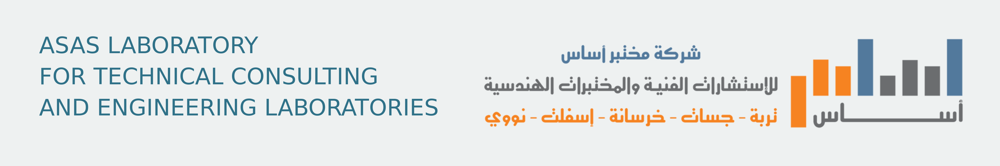

نظرة تشغيلية
الأولويات، الأعمال المتأخرة، وحالة سلسلة العينة حتى التقرير.
أولويات اليوم
تشغيليآخر العمليات
المشاريع ذات الأولوية
إدارة المشاريع
عرض موحّد يربط المشروع بأوامر العمل والعينات والاختبارات والنتائج والتقارير.
| المشروع | المالك / الموقع | الأولوية | الاستحقاق | التقدم | الحالة | الروابط |
|---|
أوامر العمل
أوامر مرتبطة بمشروع محدد، وتتبع حالة التنفيذ والمواعيد والمكلّف.
| الرقم | أمر العمل | المشروع | المكلّف | الأولوية | الاستحقاق | الحالة |
|---|
البرنامج الميداني
تسجيل الزيارات الميدانية وربطها بالمشروع والعينة.
اختبارات البرنامج الميداني
ابدأ من أحد الأقسام الأربعة، ثم ابحث باسم الاختبار أو كوده أو المواصفة وأضفه مباشرة إلى الزيارة.
4 أقسام رئيسيةفتح دليل التشغيل
زيارة ميدانية جديدة
الصور
التقط صورة جديدة أو اختر صورًا من الاستديو.
لم تُرفق صور بعد
الاختبارات المضافة للزيارة
تظهر حالة النتيجة داخل كل اختبار فقط.
العملاء
| الاسم | الهاتف | البريد |
|---|
العينات
| رقم العينة | المشروع | المادة | الخطة الرسمية | تاريخ الاستلام | الحالة |
|---|
الاختبارات
| رقم الاختبار | العينة | الاختبار | المعيار | الفني | النتيجة | الحالة |
|---|
دليل الاختبارات
مواصفة ASTM وأوراق العمل وملفات Excel للنتائج مرتبطة بكل اختبار وتدار من قسم الجودة.
| الكود | الاختبار | التصنيف | المعيار | الإصدار | المرفقات |
|---|
التقارير
دورة التقرير محفوظة: مسودة ← مراجعة ← اعتماد.
| التقرير | العينة / الاختبار | الحالة | التاريخ |
|---|
الأجهزة والمعايرة
أضف جهازاً واحداً أو استورد كل الأجهزة والمعايرات من ملف Excel/CSV دفعة واحدة.
استيراد الأجهزة والمعايرات
اختر ملف Excel الأصلي بصيغة XLSX أو ملف CSV؛ سيتعرف النظام على جدول الأجهزة ويرتب بياناته تلقائيًا.
يدعم قالب ASAS-F-6.4.1 مباشرة، ويستورد أكبر ورقة أجهزة مع تحديث السجلات الموجودة دون تكرارها.
| كود الجهاز | الجهاز | الرقم التسلسلي | القسم | النطاق | حالة التحقق | معاير حتى | الصيانة | الملاحظات |
|---|
الجودة والوثائق
الملف الرئيسي الموحد لجميع أعمال ضبط الجودة والوثائق والسجلات الفنية.
QC
ضبط الجودةQUALITY CONTROL
إدارة موحدة للوثائق والكفاءة والمخاطر والمؤشرات والإجراءات والمعايرة والتحسين المستمر من نفس الصفحة.
QMS-04وثائق الجودةالوثائق المضبوطة والإصدارات والملفات المعتمدةفتح
| التصنيف | الكود | العنوان | الإصدار | الحالة | الملف | الإجراءات |
|---|
QMS-DOCمركز الملفاترفع وفرز وفتح وتنزيل الملفات من نفس البطاقةفتح
جارٍ تحميل الملفات…
QMS-05اختبارات الكفاءةالمشاركات والنتائج وZ-score والاستيراد من Excelفتح
| الاختبار | المادة | المزود | التاريخ | النتيجة | Z-score |
|---|
QMS-06ملفات الموظفينالكفاءة والمؤهلات والخبرة والسجلات المرتبطةفتح
| الاسم | المسمى | التخصص | الخبرة | المؤهل | الحالة |
|---|
QMS-01الإجراءاتإجراءات التشغيل والجودة ومراجعاتها وإصداراتهافتح
QMS-02أوراق العملWork Sheet مرتبطة بالاختبارات والتحققفتح
QMS-03النماذج الإداريةطلبات ونماذج العمل والتدريب والسجلات الداخليةفتح
QMS-07SWOT والتحليل الاستراتيجيالقوة والضعف والفرص والتهديدات والمسؤولياتفتح
QMS-08إدارة المخاطرالاحتمالية والأثر والمعالجة والاستحقاقفتح
QMS-09مؤشرات KPIالأهداف والنتائج ونسبة الإنجاز المحسوبةفتح
QMS-10خطط التحسين والإجراءاتالإجراء والمسؤول والموعد والنتيجة وقياس الفاعليةفتح
QMS-00الأجهزة والمعايرةالأجهزة وشهادات المعايرة والحالة الفنيةفتح
| الكود | الجهاز | التسلسلي | القسم | التحقق | معاير حتى |
|---|
QMS-IMPسجلات الاستيرادآخر الملفات المرفوعة والمصنفة ومصدرهافتح
لا توجد عمليات استيراد بعد.
QMS-11دورة الإدارة والتحسين المستمرالمراحل التسع من المراجعة حتى الدروس المستفادةفتح
TLالمكتبة الفنيةملفات الأسفلت والتربة والخرسانة والحقل وNDTفتح
CVخزنة مستندات الشركةالتراخيص والاعتمادات والعقود والملفات المقيدةفتح
الجودة والوثائق
تم توحيد مركز الملفات داخل الملف الرئيسي «الجودة والوثائق».
قنوات التواصل
روابط مباشرة تُحدَّث تلقائيًا من إعدادات النظام لجميع المستخدمين.
جارٍ تحميل الرابط…
Telegram
جارٍ تحميل الرابط…
يظهر الرابط فور حفظه في «إعدادات النظام». لا ينشئ النظام مسودات أو رسائل تلقائية.
مختبر أساس للاستشارات الفنية والمختبرات الهندسية
نبذة رسمية عن خدمات المختبر وفروعه ووسائل التواصل.
شريكك الاستراتيجي في كل اختبارات مشروعك
مختبر هندسي سعودي متخصص في الجسات والدراسات الجيوتقنية واختبارات مواد البناء، يدعم القرار الهندسي بنتائج دقيقة وتقارير فنية موثوقة.
مختبر أساس معتمد من المركز السعودي للاعتماد SAAC
وفق معيار ISO/IEC 17025:2017، كما ورد في الملف التعريفي للشركة لعام 2026. يشمل مجال العمل اختبارات التربة ومواد البناء وخدمات مراقبة الجودة.
فتح الملف التعريفي للشركة PDFالاعتمادات والشهادات
وثائق من الملف التعريفي للشركة بتاريخ 8 سبتمبر 2026. يُرجع إلى كل وثيقة أصلية لمعرفة نطاقها وشروطها وتواريخ صلاحيتها.
ISO/IEC 17025:2017 — SAACاعتماد المختبر ونطاق الاختباراتعرض الوثيقة · صفحة 15ISO 9001:2015نظام إدارة الجودةعرض الوثيقة · صفحة 27ISO 14001:2015نظام الإدارة البيئيةعرض الوثيقة · صفحة 26NRRCتراخيص تشغيل المصادر الإشعاعية — مكة والمدينةعرض الوثيقة · صفحة 29RSOشهادة مسؤول الحماية من الإشعاععرض الوثيقة · صفحة 28MODONاعتماد هيئة مدنعرض الوثيقة · صفحة 22Municipalityشهادة اعتماد الأمانةعرض الوثيقة · صفحة 23Registrationتسجيل الفروع — مكة والمدينة وجدة والرياضعرض الوثيقة · صفحة 16Saudizationشهادة التوطينعرض الوثيقة · صفحة 18Businessتراخيص النشاط التجاريعرض الوثيقة · صفحة 19Qualificationشهادات التأهيل والدراسات الجيوتقنيةعرض الوثيقة · صفحة 24
قد تتضمن خطابات التأهيل للمشاريع شروطًا؛ ولا تمثل اعتمادًا غير مشروط لكل مشروع.
الملف التعريفي الكامل · 66 صفحة
عرض البروفايل داخل النظام
تدفق العمل
من الدراسة الأولية إلى التقرير المعتمد
مسار موحد داخل النظام يعكس طريقة العمل المنشورة لدى أساس ويجعل حالة كل مشروع واضحة للفريق.
- 01تحديد نطاق المشروعإنشاء المشروع وأمر العمل وربط الموقع والخدمة المطلوبة.
- 02جمع العينات ميدانياًتوثيق الزيارة والعينة وبيانات الموقع قبل بدء المعالجة.
- 03الفحص والتحققتنفيذ الاختبارات وفق المعيار المناسب ومراجعة النتائج.
- 04إصدار التقريرتحويل النتيجة المراجَعة إلى تقرير يمكن تتبع حالته.
بيانات هندسية دقيقة لكل مرحلة
تقديم خدمات مخبرية وميدانية موثوقة، مدعومة بكوادر متخصصة وتقنيات متقدمة، لدعم جودة المشاريع والتنمية المستدامة.
الريادة في الفحوصات الهندسية
أن نكون مختبراً هندسياً رائداً في المملكة في فحوصات التربة واختبارات مواد البناء من خلال الابتكار والتميز الفني.
الخدمات الهندسية
- دراسات التربة وفحص التربة قبل البناء — SBC 303 وASTM
- اختبارات الخرسانة الطازجة والمتصلدة — ASTM وSASO 1452
- اختبارات الإسفلت الميدانية والمخبرية — ASTM D6926 وD2172
- اختبارات الركام — ASTM C131 وC136
- اختبارات حديد التسليح والأنكوربولت — ASTM A615 وSASO 2510
- التحاليل الكيميائية للمياه والتربة والركام
- اختبارات البلوك والإنترلوك والبلدورات
فروعنا
- مكة المكرمة — بطحاء قريش
- جدة — الفروسية
- المدينة المنورة — بلدية العوالي
- الرياض — حي الندوة
- القصيم — الرس
التواصل الرسمي
شبكة الفروع
فتح الاتجاهاتالخريطة التفاعلية لفروع مختبر أساس
اختر الفرع لعرض موقعه، أو افتح الاتجاهات مباشرة في خرائط Google.
دقة يمكنك الاعتماد عليها
نتائج ميدانية ومخبرية دقيقة تدعم التقارير والقرارات الهندسية بثقة.
تواجد فعلي في الموقع
متابعة العمل في أرض المشروع لتقليل الخطأ قبل انتقال العينة إلى المختبر.
سرعة التنفيذ
تتابع واضح من أمر العمل إلى التقرير مع الحفاظ على جودة كل مرحلة.
خبرة فنية
فريق متخصص يربط النتيجة بالسياق التشغيلي للمشروع.
نماذج من مشاريعنا
مرجعية من الموقع الرسميمصنع أفالون-4 للصناعات الدوائية
استلام خرسانة مسلحة SRC C35 وأخذ 35 عينة أسطوانية لاختبار مقاومة الضغط ASTM C39 لعنصر OSD Block Foundation.
قطاع صناعيتطوير المنطقة التقنية — الرياض
اختبارات مراقبة جودة الطرق الإسفلتية، وأخذ عينات كور لتحديد سماكة الطبقة ونسبة الدمك ومطابقة المواصفات.
الرياضاعتماد مخطط سكني خاص — الجموم
دراسة جيوفيزيائية للمقاومة الكهربائية لتحديد طبقات الأرض والردميات والتكهفات بطريقة وينر وفق المتطلبات الفنية.
الجموم — مكةسجل التدقيق
الأثر التدقيقي للعمليات الحساسة والتغييرات التشغيلية.
| التاريخ | المستخدم | العملية | الكيان | التفاصيل |
|---|
سلة المحذوفات
نسخ آمنة للعناصر المهمة المحذوفة، ولا تظهر في صفحات التشغيل أو سجل التدقيق.
| تاريخ الحذف | النوع | السجل | حذفه | الإجراءات |
|---|
المستخدمون والصلاحيات
متاحة بكامل الصلاحيات لمدير النظام ومدير الجودة.
| الصورة | اسم المستخدم | الاسم | رقم الجوال | الدور | الحالة | تاريخ الإنشاء |
|---|
إعدادات النظام
الهوية العامة، التقارير، التواصل، الحماية والتفضيلات التشغيلية.